Temporary Structures
Classrooms of corrugated iron sheeting nailed to timber frames, with open gaps for windows and doorways. Dust, wind, cold and rain come straight in.
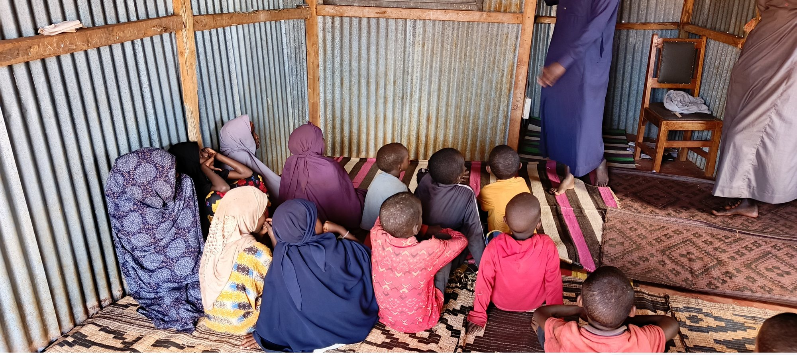
Sagante Jaldesa Ward · Marsabit County · Since 2024
Our children are learning on bare earth floors, inside walls of corrugated iron. Eight madrasa centres already serve this ward every single morning. We are building them the permanent home they have earned.
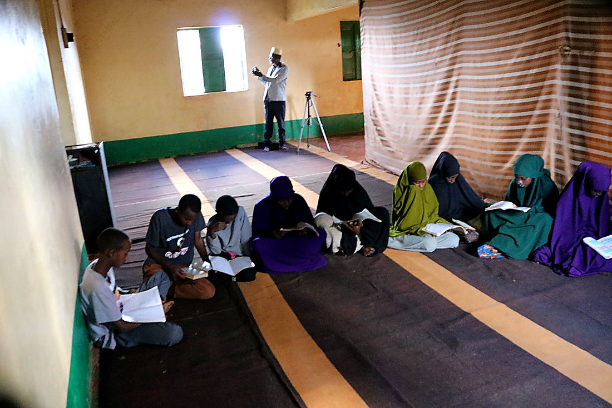
Who We Are
Sagante Jaldesa Daawah — SAJDA — was formed in 2024 by the organising committee, friends and families of the Sagante Jaldesa Muslim Community.
We did not wait for buildings. Eight madrasa centres across the ward opened their doors in mabati structures, in borrowed mosque spaces, and under whatever roof could be found. Every one of them teaches the ibtidai classes, Grade 1 to Grade 6, to the children of this ward today.
What we have never had is a permanent home: a place where a child can sit at a desk, out of the dust and the rain, and study without the roof rattling above them. That is what this project builds.
Read the full project plan →The Reality Today
These are not archive photographs. This is where the ibtidai classes of Sagante Jaldesa Ward sit down to learn, every morning of the school week.
Classrooms of corrugated iron sheeting nailed to timber frames, with open gaps for windows and doorways. Dust, wind, cold and rain come straight in.
A single room routinely holds well over a hundred learners, seated shoulder to shoulder on mats and bare ground. There are no desks and no partitions between classes.
Our eight centres teach Grade 1 to 6. After that, there is nowhere in the ward for a child to continue Islamic study — no mutawasit, no tanawi, no tahfeed centre.
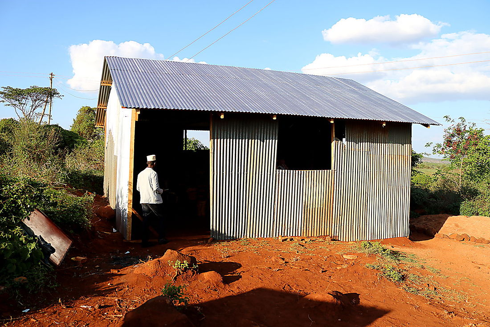
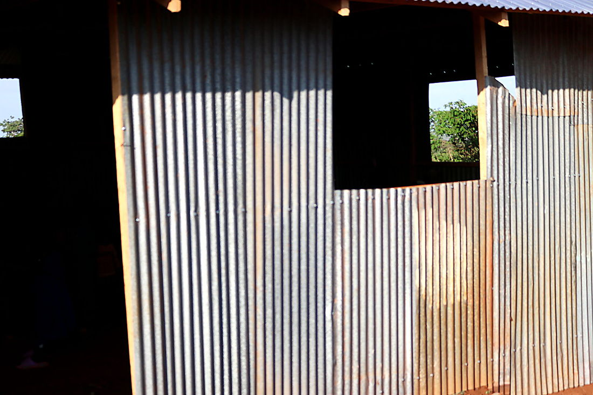
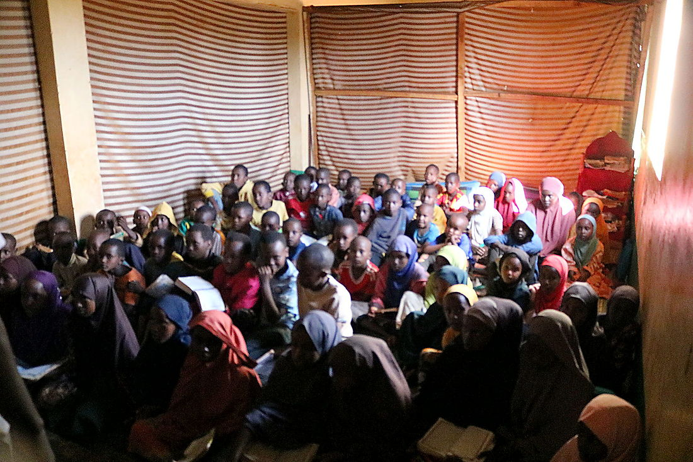
Work Already In Progress
This is not a project that starts when the money arrives. Masjids have been raised. Permanent classroom blocks have been built, roofed and painted. Foundations are in the ground. What follows is the evidence.
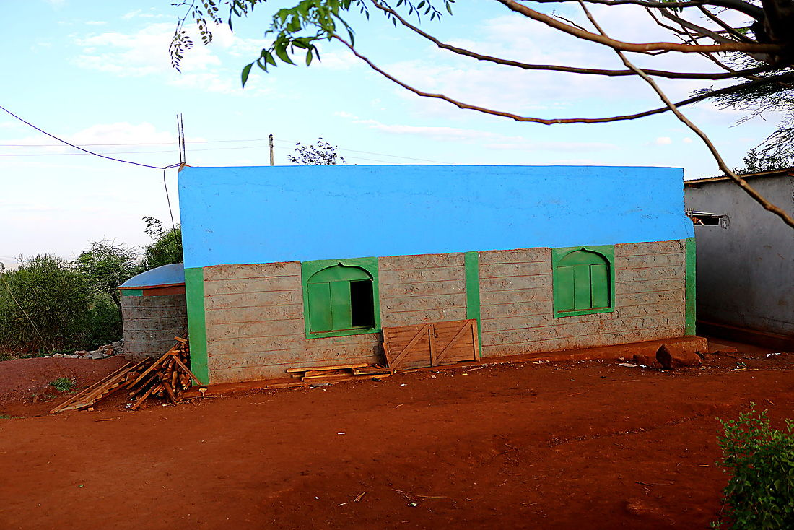
The building above stands today in Sagante Jaldesa Ward. It was raised by this community, for this community — the first permanent structure to replace an iron-sheet classroom.
It proves the thing that matters most to a donor: that funds given to SAJDA turn into walls, roofs and doors on the ground. Every shilling raised extends this same work across all eight centres.
See the full photo record →Adan Sora, Kara, Kubi Bagasa, Gombo, Ilmaan Duresa, Gar Qarsa, Goro Rukesa and Barako Jaldessa — all eight are teaching ibtidai classes, Grade 1 to 6, right now.
Complete & OperatingPlaces of prayer have been completed and are in daily use, several of them doubling as the only sheltered teaching space their centre has.
CompleteStone walls, a fitted roof, arched windows and hung doors — finished and painted. The template for every centre that follows.
CompleteExcavation, stonework and foundation courses are in progress at further sites, with the community turning out to support each build.
In ProgressDesigns are drawn for the Sagante Jaldessa Islamic Education Centre, together with a five-storey Waqf rental building to sustain it. This is what the fundraiser exists for.
Next PhaseOur Vision
To establish an Islamic Integrated Education Complex that combines the national curriculum with Islamic values — providing quality, safe and dignified learning for generations to come.
A permanent campus carrying mutawasit, tanawi and tahfeed classes, fed by all eight madrasa centres across the ward.
Building the capacity of the next generation of qualified Islamic educators, so the centre is staffed by teachers raised in this community.
A five-storey rental building whose income sustains administration, teachers' salaries and maintenance — so the centre never again depends on a single appeal.
The Record
Photographs from the ground across Sagante Jaldesa Ward — the classrooms as they are, the children who fill them, and the buildings already rising.
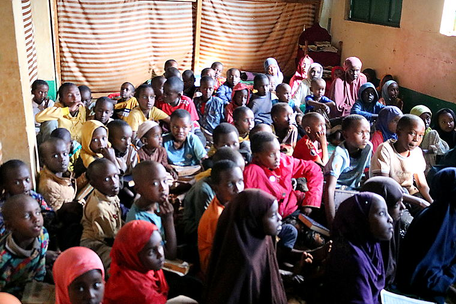
The faces of an entire generation of Sagante Jaldesa.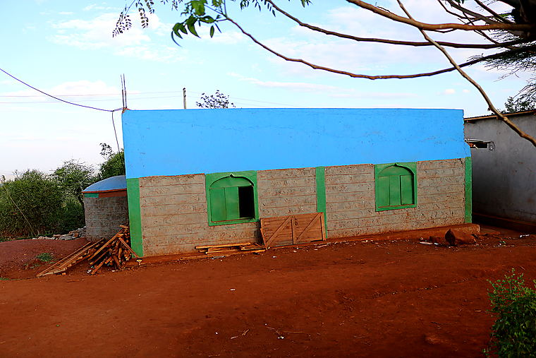
Masonry and mortar in place of iron sheets.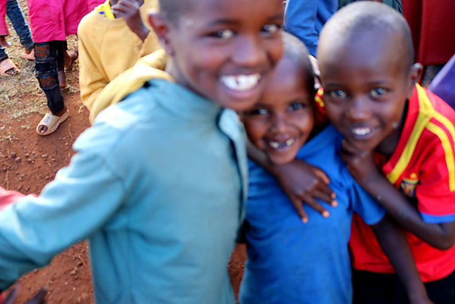
Friendship at break time.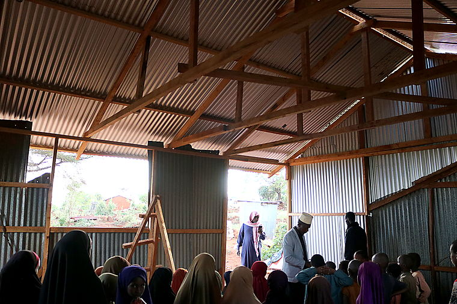
No ceiling, no glass, no doors.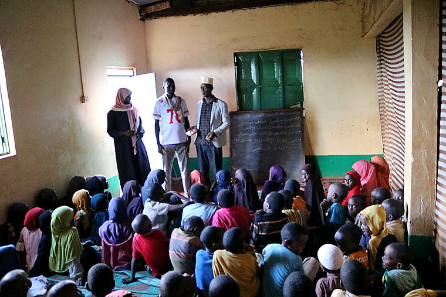
Teachers address the morning assembly.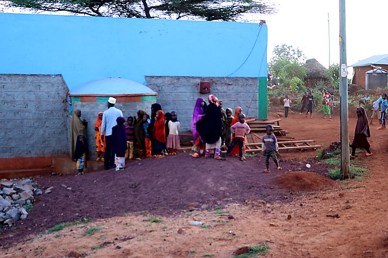
The community gathers at the newly raised block.The Fundraiser
The organising committee, friends and families of the Sagante Jaldesa Muslim Community cordially invite you.
The event raises funds to construct the Sagante Jaldessa Islamic Education Centre, to strengthen the eight SAJDA supporting centres that feed it, and to establish a Waqf that will carry administration and teachers' salaries for the long term.
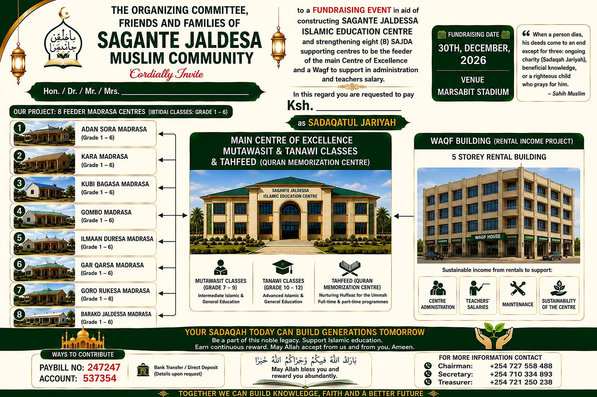
مَنْ دَلَّ عَلَى خَيْرٍ فَلَهُ مِثْلُ أَجْرِ فَاعِلِهِ
“When a person dies, his deeds come to an end except for three: ongoing charity (sadaqah jariyah), beneficial knowledge, or a righteous child who prays for him.”Sahih Muslim
Support the Build
Contribute directly through M-Pesa. Every contribution counts. Every child matters.
The Waqf endowment accounts for roughly 35% of the total target — the portion that keeps the centre running long after the building is finished.